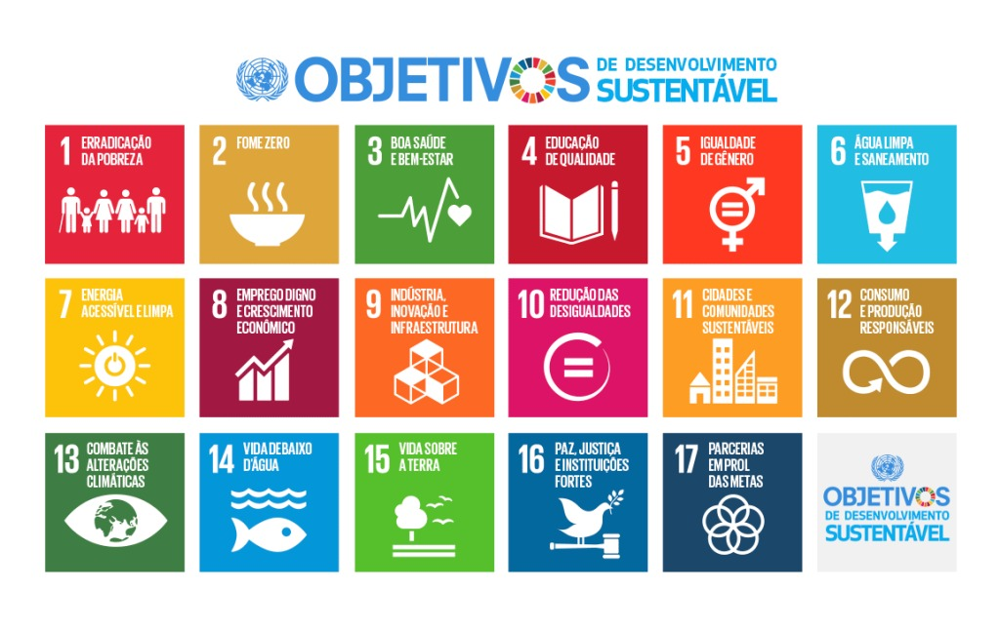

Abelhas da Mata: Guardiãs da Biodiversidade
Reconhecendo a importância crucial dos polinizadores para o meio ambiente, Ribeirão Pires assume um papel de destaque na conservação ambiental com o projeto "Abelhas da Mata". Essa iniciativa, implementada pela Prefeitura, visa fortalecer o ecossistema local através da instalação de abrigos para abelhas nativas sem ferrão em áreas estratégicas da cidade. A proteção desses insetos, além de promover a polinização e garantir a continuidade da flora local, contribui para a saúde do meio ambiente como um todo.
"Se as abelhas desaparecerem da face da Terra, a humanidade terá apenas mais quatro anos de existência." - Albert Einstein
Compromisso com os Objetivos de Desenvolvimento Sustentável
O Projeto Abelhas da Mata está alinhado com os Objetivos de Desenvolvimento Sustentável (ODSs) da ONU. Nosso trabalho contribui para a promoção de um mundo mais sustentável e justo, garantindo a preservação da biodiversidade e a educação ambiental.
 Saiba mais sobre os ODSsPilares do Projeto
Sobre o Projeto
O projeto "Abelhas da Mata" é uma iniciativa revolucionária que propõe a criação de pequenos "condomínios" de abelhas nativas e sem ferrão, distribuídos estrategicamente pela cidade. Atualmente, cerca de 80 mil abelhas habitam os 14 Meliponários instalados, formando uma rede vital para a manutenção da biodiversidade local.
Cada condomínio é cuidadosamente projetado para oferecer o habitat ideal para diferentes espécies de abelhas, garantindo sua proliferação e bem-estar. Esta abordagem inovadora não apenas protege as abelhas, mas também cria um laboratório vivo para pesquisas e educação ambiental.
Impacto Ecológico
As abelhas desempenham um papel crucial na reprodução de plantas e na manutenção da diversidade de espécies vegetais. Estima-se que mais de 75% das culturas alimentares globais dependem, em algum grau, da polinização realizada por insetos, principalmente abelhas.
O Projeto Abelhas da Mata contribui significativamente para a preservação da biodiversidade local, garantindo a polinização de espécies nativas e cultivadas. Isso não apenas mantém o equilíbrio ecológico, mas também assegura a produção de alimentos e a saúde dos ecossistemas urbanos e rurais de Ribeirão Pires.
Educação Ambiental
O projeto "Abelhas da Mata" também serve como um projeto de educação ambiental. A iniciativa inclui atividades educativas em parceria com escolas e comunidades, visando conscientizar sobre a importância das abelhas para a polinização e a biodiversidade. Essas ações promovem o aprendizado sobre o papel ecológico das abelhas, incentivando uma maior responsabilidade ambiental entre os moradores. Assim, o projeto não apenas protege as abelhas nativas, mas também engaja a comunidade em práticas sustentáveis.
Circuito das Abelhas: Uma Rede de Vida
Explore o mapa interativo abaixo para descobrir a localização dos 14 Meliponários de abelhas espalhados por Ribeirão Pires. Cada ponto representa um oásis de biodiversidade, contribuindo para a saúde ecológica de nossa cidade.
Pontos do Circuito das Abelhas: Uma Jornada de Descobertas
Cada ponto do Circuito das Abelhas é uma oportunidade única de aprendizado e conexão com a natureza. Descubra a localização de cada condomínio e planeje sua visita para uma experiência enriquecedora.
PEPTA: Programa de Educação Patrimonial, Turística e Ambiental
O PEPTA é uma iniciativa inovadora que une esforços do Patrimônio Cultural, Turismo e Meio Ambiente para proporcionar uma experiência pedagógica única aos estudantes de Ribeirão Pires.
Educação Ambiental
Lei 5.303/2009
Plano Diretor
Lei Municipal 5.907/2014
Patrimônio Cultural e Natural
Lei Municipal 6.227/2018
Turismo Educativo
Lei Municipal 6.422/2019
"Professores, vocês são nossos maiores aliados nesta missão de educar e inspirar!"
O PEPTA está alinhado com a Agenda 2030 da ONU, promovendo educação de qualidade e desenvolvimento sustentável.
Como Você Pode Ajudar
A preservação das abelhas é uma responsabilidade coletiva. Aqui estão algumas maneiras pelas quais você pode contribuir:
- Plante flores nativas em seu jardim ou varanda
- Evite o uso de defensivos agrícolas (Agrotóxicos)
- Participe de programas de educação ambiental
- Apoie iniciativas locais de conservação